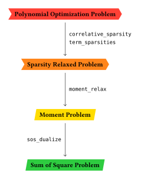

Quick Start
The non-commutative Broyden banded function is a generalization of the classical Broyden banded function to non-commuting variables. It is often used in optimization and numerical analysis to test the performance of algorithms. We will use it as an example.
The function is defined as:
\[f(x_1, \dots, x_n) = \sum_{i=1}^n f_i(x_1, \dots, x_n)^2\]
where
\[f_i(x_1, \dots, x_n) = 2x_i + 5x_i^3 + 1 - \sum_{j \in J_i} (x_j + x_j^2)\]
with
\[J_i = \{j | j \neq i, \max(1, i-5) \leq j \leq \min(n, i+1)\}\]
The variables $x_i$ are non-commuting. You may think of them as matrices or operators that is assigned with a representation. It's possible to put constraints on the variables in the form of polynomial inequalities. For example, we may require:
\[1 - x_i^2 \geq 0 \quad \text{and} \quad x_i - \frac{1}{3} \geq 0 \quad \forall i \in [1,n]\]
Setting Up the Problem
First, create non-commutative variables using create_noncommutative_variables. Then use NCTSSoS.polyopt to define the optimization problem with inequality constraints.
using NCTSSoS, MosekTools
function broyden_banded(n::Int)
# Create non-commutative variables
registry, (x,) = create_noncommutative_variables([("x", 1:n)])
# Build the objective function using sum
f = sum(1:n) do i
jset = setdiff(max(1, i-5):min(n, i+1), i)
g = isempty(jset) ? 0.0 * x[1] : sum(x[j] + x[j]^2 for j in jset)
(2.0*x[i] + 5.0*x[i]^3 + 1 - g)^2
end
# Define inequality constraints
ineq_cons = [[1.0 - x[i]^2 for i in 1:n]; [x[i] - 1//3 for i in 1:n]]
return polyopt(f, registry; ineq_constraints=ineq_cons)
end
pop = broyden_banded(6)The create_noncommutative_variables function returns a registry and variable arrays. All algebraic constraints are automatically encoded through the type system.
Polynomial Optimization is NP-hard, therefore it is considered impossible to solve them efficiently in general. However, it is possible to relax the problem into Semidefinite Programming. The solution of the Semidefinite program will be the lower/upper bound of the original minimization/maximization polynomial optimziation problem.
The relaxation can be done in two different forms, moment relaxation and sum of hermitian square relaxation. The relaxation is tight in the limit of a parameter, moment order, reaching infinity. However, you may get lucky and be able to sovle the problem at finite moment order.
Information about the relaxation is encoded in NCTSSoS.SolverConfig. Besides moment order, it also needs to be provided with a SDP Solver. Different optimizers may have different performance characteristics and may be more or less suitable for a given problem.
solver_config = SolverConfig(optimizer=Mosek.Optimizer, order=3)Solving the Problem
Finally, we are ready to solve this problem using NCTSSoS.cs_nctssos.
result = cs_nctssos(pop, solver_config)
# Objective: ~2.979657977586228Although we have reached a tight bound, time to solve the problem can still be significant. As a remedy, Sparsities can be utilized to reduce the problem size. This is achieved by supplying an EliminationAlgorithm to NCTSSoS.SolverConfig.
solver_config = SolverConfig(optimizer=Mosek.Optimizer, order=3, cs_algo=MF(), ts_algo=MMD())
result_sparse = cs_nctssos(pop, solver_config)
# Objective: ~2.979657981888441As expected, the time taken to solve the problem is significantly reduced. However, the result may no longer be a tight lower bound since sparsity is itself a kind of relaxation. Luckily, we can tighten the relaxation in the Term Sparsity sense using NCTSSoS.cs_nctssos_higher.
result_higher = cs_nctssos_higher(pop, result_sparse, solver_config)
# Objective: ~2.9796579998271047Workflow
To summarize, the workflow for solving polynomial optimization can be summarized as

If you would like to understand more please refer to examples section in the document.